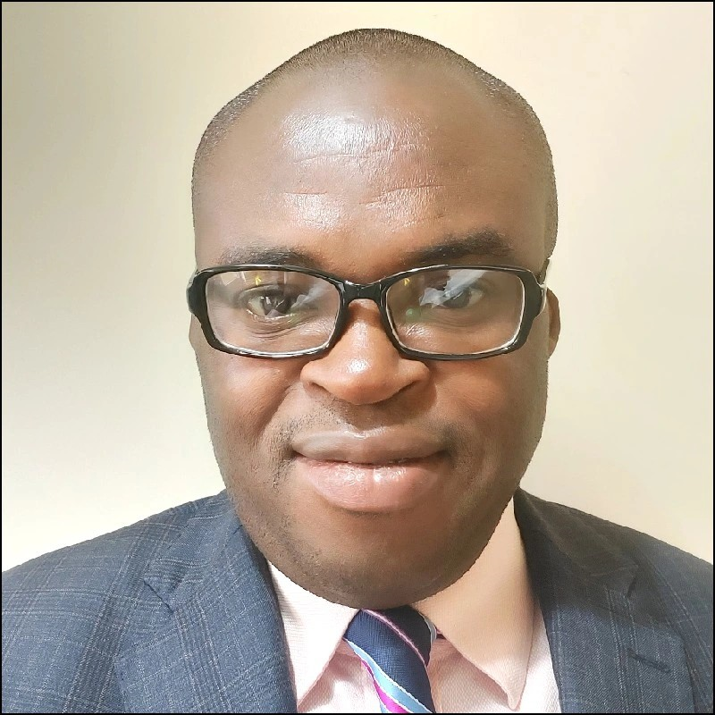

MY RESUME

About me
Contact me
PERSONAL STATEMENT
I am a very energetic and creative. A long time ago, I decided to convert my enormous energy
into value creation. As such, I have volunteered in promoting themes such as STEM education, Education for Sustainable Deveolopment, Openscience, Policy advocacy on
industrialisation of African Countries, particularly Nigeria where I come from. I am a researcher,writer and a teacher. Overall, I believe in working together to
pull resources and skills together to solve problems.
EDUCATION
The University of Manchester, United Kingdom
- 2018 - 2022: PhD in Mechanical Engineering
- PhD Awards: MACE PGR Student of the year & Best outputs
- Sponsor: Petroleum Technology Development Fund (PTDF) Nigeria
The University of Warwick, United Kingdom
2013 - 2014: MSc in Manufacturing Systems Engineering
Award: Ebonyi State Government Overseas Scholarship
Usman Danfodiyo University, Sokoto
- 2010 - 2011: Postgraduate Diploma in Education (PGDE)
Federal University of Technology, Owerri, Imo State
2001 - 2005: Bachelor in Polymer and Textile Engineering
WORK EXPERIENCE
Loughborough University, United Kingdom
Roles and Responsibilities
2022 - Date
- Module leader, Lean and Supply Chain Management.
- Module Leader, Lean and Agile Manufacturing.
- Module Leader, Integrating Studies
- Co-Director, Equality, Diversity and Inclusion (EDI)
The University of Manchester, United Kingdom
Roles and Responsibilities
- 2018 - 2022: Graduate Teaching Assistant in Mechanical, Aerospace and Civil Engineering
- Engineering Social Responsibility Fellow
Alex Ekwueme Federal University, Ndufu-Alike Ikwo, Nigeria
Roles and Responsibilities
- 2016 - 2020: Lecturer II, Faculty of Engineering and Technology